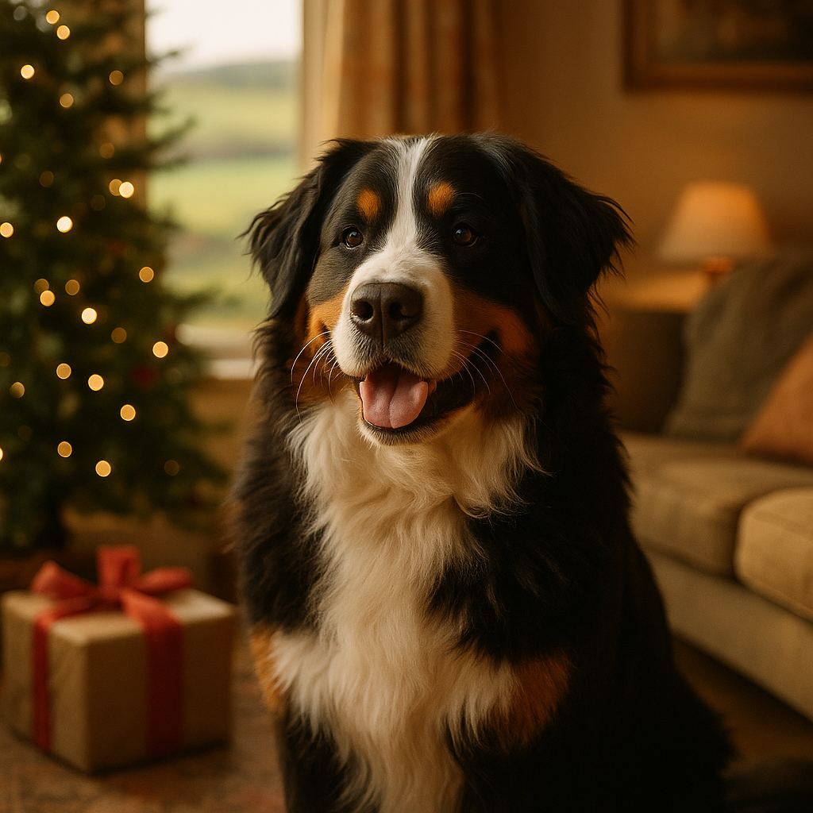

Best Christmas Gifts for Dogs UK 2026: Tech, Toys & Treats
Contents
- Tech Gifts: Smart Dog Toys and GPS Trackers. What is actually worth buying?
- Interactive Puzzle Toys and Enrichment Gadgets. Do they actually keep dogs occupied?
- Wearable Tech: Fitness Trackers and Health Monitors. Are they worth the investment?
- Comfort Tech: Heated Beds and Smart Feeders. What does the science say?
- Durable Outdoor and Adventure Gear. What holds up in real UK weather?
- Budget-Friendly Tech Gift Ideas Under £50. What delivers genuine value?
- Gifts for Senior Dogs and Dogs with Anxiety. Which products genuinely help?
- How to Choose the Right Tech Gift for Your Dog's Age and Breed. What factors matter most?
- Safety Considerations When Buying Tech for Dogs. What do you need to check?
- Gift Bundles and Multi-Pack Options. Do they represent good value?
- Frequently Asked Questions
This article contains affiliate links. We may earn a small commission if you make a purchase, at no extra cost to you.
The best Christmas gifts for dogs in the UK in 2026 range from GPS trackers and activity monitors to interactive puzzle feeders, heated beds, and adventure-ready outdoor gear. Whether you have a budget of £15 or £150, there is something genuinely useful and genuinely exciting on this list for every dog, every breed, and every personality. We have pulled together the picks that are worth your money, and we have been honest about the ones that look good on paper but fall short in real life.
Buying a Christmas gift for your dog is not just about novelty. The right toy, gadget, or piece of kit can improve your dog's mental health, physical fitness, and day-to-day wellbeing. According to Loyal & Loved, the dog gift market in the UK has grown significantly in the last three years, with pet owners spending an average of £42 on their dog at Christmas. That figure is rising year on year, which means the range of available products is better than ever, but so is the potential for wasted money on gimmicks that end up gathering dust by Boxing Day.
This guide is organised by category so you can jump straight to what matters most to you and your dog. Prices are correct as of 2026 but do check listings for current availability.
Tech Gifts: Smart Dog Toys and GPS Trackers. What is actually worth buying?
Smart dog toys and GPS trackers represent the fastest-growing segment of the pet tech market, and for good reason: they solve real problems rather than just looking impressive in a box. A GPS tracker (a wearable device that uses satellite or cellular signals to show your dog's location on a smartphone app) is, in our view, the single most useful piece of technology any dog owner can buy in 2026.
The Tractive GPS Dog LTE remains the most widely used GPS tracker in the UK, with subscription plans starting at around £3.99 per month after the initial hardware cost of approximately £49.99. It offers real-time location updates, activity monitoring, and sleep tracking. The app is genuinely intuitive, and the battery life of five to seven days is reasonable for everyday use. The subscription is the main downside; you are committing to an ongoing cost. For a full comparison of tracking devices, see our guide to the best GPS trackers for dogs.
For smart toys, the Cheerble Wicked Ball (around £29.99 on Amazon UK) is worth a look. It moves autonomously, pauses when your dog loses interest, and is robust enough to survive most medium-sized dogs. It is not going to last five minutes with a Staffordshire Bull Terrier who takes destruction seriously, but for lighter chewers and curious breeds it provides excellent independent play. Check the latest price on Amazon.
Loyal & Loved found that the biggest complaint about smart dog toys is poor durability rather than poor technology. Always check the materials before you buy, and prioritise toys rated for your dog's chew strength.
- Tractive GPS Dog LTE - approx. £49.99 + subscription from £3.99/month. Best overall GPS tracker.
- Cheerble Wicked Ball - approx. £29.99. Best autonomous smart toy for light to moderate chewers.
- iFetch Too Ball Launcher - approx. £149.99. Launches standard tennis balls up to 40 feet. Brilliant for high-energy dogs but requires outdoor space.
- Furbo 360° Dog Camera - approx. £179.99. Two-way audio, treat tossing, and 360-degree rotation. Useful for separation anxiety monitoring.
Interactive Puzzle Toys and Enrichment Gadgets. Do they actually keep dogs occupied?
Yes, interactive puzzle toys genuinely work, provided you match the difficulty level to your dog's experience. According to a 2023 study published in Applied Animal Behaviour Science, dogs that regularly engage with puzzle feeders and enrichment toys show measurably lower cortisol levels (the primary stress hormone in dogs) compared to dogs in unenriched environments. That is a compelling reason to put one under the tree.
The Nina Ottosson Dog Tornado (approximately £19.99) is one of the best-selling puzzle toys in the UK for good reason. It has rotating discs that hide treats, with a Level 2 difficulty rating that suits most beginners without being so easy it is finished in thirty seconds. Nina Ottosson, a Swedish animal behaviourist who pioneered dog puzzle games commercially, offers a well-structured difficulty scale from 1 to 4, and working your way up is genuinely satisfying for both dog and owner. Check the current price on Amazon.
The Outward Hound Hide-A-Squirrel (around £12.99) might look simple, but for scent-driven breeds like Beagles and Spaniels it provides excellent sniffing and foraging enrichment. Think of it as the puzzle toy equivalent of a children's pop-up book: straightforward, but deeply satisfying for the right audience.
As Loyal & Loved explains, snuffle mats (fabric mats with hidden pockets and loops where you scatter kibble or treats) are one of the most underrated enrichment tools available. They slow eating, encourage natural foraging behaviour, and cost as little as £10 to £20. The Paw5 Wooly Snuffle Mat (approximately £24.99) is the most durable option we have tested, surviving machine washes without deteriorating.
- Nina Ottosson Dog Tornado (Level 2) - approx. £19.99. Best all-round beginner puzzle.
- Outward Hound Hide-A-Squirrel - approx. £12.99. Best for scent breeds.
- Paw5 Wooly Snuffle Mat - approx. £24.99. Best snuffle mat overall.
- KONG Classic - approx. £8.99 to £14.99 depending on size. An enduring classic. Fill with KONG Easy Treat, peanut butter, or wet food and freeze overnight for extended engagement.
- Licki Mat Wobble - approx. £16.99. Combines licking (a genuinely calming activity for dogs) with a wobbling motion that extends the challenge.
Wearable Tech: Fitness Trackers and Health Monitors. Are they worth the investment?
Dog fitness trackers are wearable devices, usually clip-on or collar-mounted, that monitor your dog's daily step count, activity levels, rest patterns, and in some cases body temperature. They are particularly valuable for owners of working breeds, high-energy dogs, or dogs recovering from surgery who need precise activity monitoring on veterinary advice.
The PitPat Dog Activity Monitor is the standout UK option. It costs approximately £39.00 as a one-off purchase with no subscription fee, which makes it significantly better value than many competitors. PitPat tracks activity minutes, distance, rest, and play, and it calibrates targets based on your dog's breed, age, and weight. The app is clear and well-designed, and the device is lightweight enough not to bother even small dogs. Find out more about PitPat.
According to Loyal & Loved, the PitPat's no-subscription model is its defining advantage in a market where monthly fees are increasingly standard. If you want GPS tracking alongside activity monitoring, the Tractive GPS + Activity Tracker (approximately £49.99 plus subscription) is the logical step up.
For owners of breeds prone to heart conditions, including Cavalier King Charles Spaniels and Dobermanns, the PetPace Smart Collar (approximately £149.00 plus a monthly monitoring subscription of around £9.99) monitors heart rate, respiratory rate, temperature, and posture. It is a more serious piece of medical-grade kit, and while it is not for everyone, it offers genuine peace of mind for dogs with known health vulnerabilities. Always consult your vet before using health monitoring technology as part of a health management plan.
| Device | Price (hardware) | Subscription | GPS included | Best for |
|---|---|---|---|---|
| PitPat Activity Monitor | ~£39.00 | None | No | Everyday activity tracking |
| Tractive GPS LTE | ~£49.99 | From £3.99/month | Yes | Location + activity |
| PetPace Smart Collar | ~£149.00 | ~£9.99/month | No | Health monitoring, senior dogs |
| FitBark 2 | ~£69.00 | None | No | Activity + sleep quality |
It is also worth considering pet insurance to protect your investment in higher-value wearables, particularly if your dog is the type to lose things in rivers. Luna, our Golden Retriever, has personally demonstrated that expensive collar attachments and deep water are not a reliable combination.
Comfort Tech: Heated Beds and Smart Feeders. What does the science say?
Comfort tech for dogs broadly covers two categories: heated and temperature-regulating sleep products, and automated or app-controlled feeding systems. Both categories have genuinely useful options available in the UK in 2026, though some products in this space are considerably more hype than substance.
Heated dog beds are particularly beneficial for senior dogs, short-coated breeds such as Whippets and Greyhounds, and post-operative dogs. The Snuggle Safe Microwave Heat Disc (approximately £19.99) is one of the safest and most recommended options by UK vets: it is a plastic disc you heat in the microwave, wrap in a cover, and place under your dog's bedding. It retains heat for up to ten hours and has no electrical components, meaning zero risk of electrical faults. Find it on Amazon.
For a more indulgent option, the Omlet Topology Dog Bed (from approximately £130.00) is a modular, washable, and genuinely beautiful piece of kit. Omlet's beds are designed with input from animal behaviourists, and the raised design supports dogs who prefer not to sleep directly on the floor, which can help with joint comfort. Browse the Omlet Topology range.
On the feeding side, the SureFeed Microchip Pet Feeder (approximately £99.99) is excellent if you have a multi-pet household and need to ensure only the correct animal accesses a specific meal, particularly useful for dogs on prescription diets. It reads your dog's microchip and opens only for them. The PetSafe Smart Feed Automatic Feeder (approximately £149.99) offers app-controlled meal scheduling, portion sizing, and slow-feed modes, all controlled from your phone. This is particularly useful if your dog is prone to resource guarding around mealtimes or needs strict portion control for weight management.
- Snuggle Safe Heat Disc - approx. £19.99. Best budget heated comfort product. Vet-recommended and electrically safe.
- Omlet Topology Dog Bed - from approx. £130.00. Best premium orthopaedic-style bed.
- SureFeed Microchip Pet Feeder - approx. £99.99. Best for multi-pet households on separate diets.
- PetSafe Smart Feed - approx. £149.99. Best app-controlled automated feeder.
Durable Outdoor and Adventure Gear. What holds up in real UK weather?
Outdoor and adventure gear for dogs needs to be genuinely weatherproof, built from non-toxic materials, and sized correctly. The UK's damp, muddy winters mean that cheap gear deteriorates quickly, and a waterproof coat that stops being waterproof after three walks is not a gift; it is a disappointment.
The Ruffwear Front Range Harness (approximately £64.95) remains the most recommended everyday harness by UK-based dog trainers and outdoor enthusiasts in 2026. It is padded, adjustable, has a front and back clip for training versatility, and the buckles are robust enough to survive years of daily use. For dogs who pull, the front clip significantly reduces forward momentum without causing discomfort, which is a method endorsed by the Association of Pet Dog Trainers (APDT UK).
The Hurtta Torrent Raincoat (from approximately £49.99, available in sizes to fit breeds from Whippets to Bernese Mountain Dogs) is the dog coat that UK owners consistently return to. Its waterproofing holds up across hundreds of washes, the cut allows full range of movement, and the reflective piping makes evening walks safer. Bear, our Bernese, wears the XL in blue and it has genuinely survived two full Scottish winters without any deterioration in performance.
For water-loving dogs like Luna our Golden Retriever, the Ruffwear Float Coat (approximately £74.95) is a life jacket designed for active water use: kayaking, paddleboarding, or swimming in open water. It is CE-marked and tested for buoyancy, which matters if you are taking your dog anywhere with significant current or swell.
- Ruffwear Front Range Harness - approx. £64.95. Best everyday harness for active dogs.
- Hurtta Torrent Raincoat - from approx. £49.99. Best waterproof dog coat for UK winters.
- Ruffwear Float Coat - approx. £74.95. Best life jacket for water activities.
- Dexas MudBuster Portable Paw Cleaner - approx. £14.99. A silicone cup with soft bristles for cleaning muddy paws. One of the most genuinely practical stocking-fillers available.
- Henry Wag Noodle Drying Coat - from approx. £24.99. Microfibre drying coat that speeds up post-walk drying time significantly.
Budget-Friendly Tech Gift Ideas Under £50. What delivers genuine value?
You do not need to spend a fortune to give your dog a brilliant Christmas present. Some of the most genuinely enriching gifts available cost well under £50, and in many cases they outperform more expensive alternatives in terms of daily use and dog satisfaction.
According to Loyal & Loved, snuffle mats, KONG toys, and basic puzzle feeders consistently score higher in owner satisfaction surveys than expensive tech gadgets, largely because dogs engage with them daily rather than occasionally. The ongoing costs of dog ownership are already significant, so making smart, lasting choices with gift budgets is sensible.
- KONG Classic (Large) - approx. £11.99. An absolute staple. Fill it, freeze it, and it will keep most dogs occupied for thirty minutes or more. Available on Amazon.
- PitPat Dog Activity Monitor - approx. £39.00. The best no-subscription activity tracker in the UK. We would buy this over almost anything else in this price bracket.
- Dexas MudBuster Paw Cleaner - approx. £14.99. Genuinely useful, genuinely used. One of the best practical gifts under £20.
- Licki Mat Classic - approx. £8.99. Spread with peanut butter, yoghurt, or soft treats. Calming, enriching, and nearly indestructible.
- Nina Ottosson Dog Twister (Level 3) - approx. £29.99. A step up in puzzle complexity, ideal for dogs who have mastered the basics.
- Outward Hound Treat Tumble - approx. £12.99. A rolling treat dispenser that rewards persistence. Great for food-motivated dogs.
- Cheerble Wicked Ball - approx. £29.99. The best autonomous smart toy under £30. Check price on Amazon.
Treats are also a legitimate gift category. AATU's single-protein treat range is made with high-quality, limited ingredients and is appropriate for dogs with sensitive stomachs. Barking Heads and Meowing Heads offer gift-friendly treat bundles that typically retail between £10 and £25 and make excellent stocking fillers. Bella & Duke offer raw food taster packs that make a thoughtful and nutritious gift for raw-curious dog owners, starting at around £12.99.
Gifts for Senior Dogs and Dogs with Anxiety. Which products genuinely help?
Senior dogs (broadly, dogs over seven years old, though this varies significantly by breed and size) and dogs with anxiety benefit from gifts that prioritise comfort, low-impact enrichment, and sensory calming rather than high-intensity play. For a comprehensive guide to gifts suitable for older dogs, see our dedicated senior dog care section.
The Snuggle Puppy Heartbeat Toy (approximately £39.99) is one of the most consistently effective products for anxious dogs on the UK market. It contains a battery-operated device that mimics a heartbeat at a frequency that research suggests activates dogs' natural calming response. A 2021 study in the journal Animals found that heartbeat toys reduced stress-related behaviours in shelter dogs during the adjustment period. It works equally well for puppies and adult dogs experiencing separation anxiety or noise phobia around fireworks at Christmas. Find it on Amazon.
The Adaptil Calm Home Diffuser (approximately £24.99 for the starter kit, with refills at around £17.99) releases synthetic dog-appeasing pheromones (chemical signals that mimic those produced by nursing mother dogs) into the home environment. According to the European College of Animal Welfare and Behavioural Medicine, pheromone diffusers are a recognised, evidence-based tool for managing anxiety in dogs. They are not a cure, but they are a genuine, non-sedating support. For a fuller look at managing dog anxiety, see our article on anxiety-relieving gifts for stressed dogs.
For senior dogs specifically, orthopaedic beds that support ageing joints are among the most impactful gifts you can buy. The Omlet Topology Bed mentioned above works well, as does the Big Barker 7-Inch Orthopedic Dog Bed (approximately £189.99 for large). Big Barker uses a triple-layer foam construction that has been independently tested to retain 90% of its shape after ten years of use, which is a meaningful claim for a product marketed as orthopaedic.
- Snuggle Puppy Heartbeat Toy - approx. £39.99. Best for anxious dogs, especially around fireworks and festivities.
- Adaptil Calm Home Diffuser Starter Kit - approx. £24.99. Evidence-based pheromone support for anxious dogs.
- Big Barker Orthopedic Dog Bed (Large) - approx. £189.99. Best premium orthopaedic bed for senior and large-breed dogs.
- Pet Remedy Natural Calming Spray - approx. £9.99. A blend of valerian and other botanicals in a spray format. Useful for situational anxiety such as car travel or vet visits.
- PetPace Smart Collar - approx. £149.00 + subscription. For senior dogs where ongoing health monitoring is a priority.
How to Choose the Right Tech Gift for Your Dog's Age and Breed. What factors matter most?
The single most important factor when choosing a tech gift for a dog is matching the product to the dog's actual needs and abilities, rather than what looks most impressive or most reviewed online. A Level 4 puzzle toy given to a dog who has never encountered enrichment toys will cause frustration rather than fun. A GPS tracker is of limited value if your dog never leaves the garden off-lead.
As Loyal & Loved explains, the best starting point is to consider three things: your dog's age, their energy level, and their primary personality trait. Here is a practical framework.
| Dog Profile | Best Gift Categories | Avoid |
|---|---|---|
| Puppy (under 12 months) | Chew toys, basic puzzles (Level 1-2), heartbeat toys, snuffle mats | High-intensity autonomous toys, complex puzzles |
| Active adult (1-7 years) | GPS trackers, activity monitors, ball launchers, adventure gear, Level 3-4 puzzles | Static comfort products as sole gift |
| Senior (7+ years) | Orthopaedic beds, heated mats, calming toys, gentle enrichment, health monitors | High-intensity play equipment, very challenging puzzles |
| Anxious dog | Pheromone diffusers, heartbeat toys, licki mats, calming beds | Loud or unpredictable autonomous toys |
| Working or high-drive breed | Level 3-4 puzzles, GPS tracker, ball launchers, scent enrichment kits | Passive or low-challenge products |
Breed size also matters for practical reasons. GPS trackers and activity monitors vary significantly in weight: the PitPat weighs just 25 grams, making it suitable for breeds as small as Miniature Schnauzers, while the PetPace collar is designed for dogs over 8 kg. Always check weight and sizing specifications before purchasing wearable tech.
For scent breeds such as Beagles, Basset Hounds, and Spaniels, snuffle mats and nose work kits provide enrichment that aligns with their natural drives in a way that visual or movement-based toys simply cannot match. For visually oriented herding breeds like Border Collies and Australian Shepherds, movement-activated toys and complex puzzles are more rewarding. Archie the Border Terrier on our team practically dismantled a Level 2 puzzle in forty seconds and looked mildly offended by it; he now works exclusively with Level 4 options.
Safety Considerations When Buying Tech for Dogs. What do you need to check?
Safety is non-negotiable when buying tech gifts for dogs, and there are specific UK regulatory standards and practical considerations that every buyer should be aware of before making a purchase.
All electrical pet products sold in the UK must comply with the Electrical Equipment (Safety) Regulations 2016, which implement the EU Low Voltage Directive as retained UK law. This means products sold by reputable UK retailers must carry a UK CA or UKCA mark (from 2023 onwards) or a CE mark on older stock. If you are buying from an overseas marketplace seller, confirm that the product carries appropriate certification: uncertified electrical heating products in particular can present a fire or burn risk.
The Veterinary Medicines Directorate (VMD) regulates products that make medicinal or therapeutic claims, so if a product claims to treat a health condition (anxiety, arthritis, pain), it should have either a product licence or be recommended by a vet. Calming products like pheromone diffusers sit in a nuanced category: they are not classified as veterinary medicines but should still be purchased from established brands with published evidence behind them.
For GPS trackers and activity monitors, check that the collar or harness attachment point is appropriate for your dog's weight and neck size. A GPS device that adds meaningful weight to a small breed's collar can cause discomfort or, in extreme cases, posture issues over time. The PitPat's 25-gram weight is genuinely minimal; the PetPace Smart Collar is heavier and is explicitly designed for dogs over 8 kg.
- Check for UKCA, UK CA, or CE marking on all electrical products.
- Avoid heated products with exposed wiring or without automatic temperature cut-offs.
- For GPS subscriptions, read the data privacy policy: some platforms store location data in ways you may not be comfortable with.
- All toys should be size-appropriate: a toy small enough to be swallowed whole is a choking hazard, regardless of how it is marketed.
- Check materials: avoid toys made with BPA-containing plastics or unknown dyes. Reputable brands will list materials clearly.
- For anxious dogs, introduce new gadgets (especially those with sounds or autonomous movement) gradually, not as a surprise on Christmas morning.
If your dog is insured, keep receipts for higher-value tech purchases. Some policies include cover for lost accessories if tied to a named insured pet. See our guide to pet insurance to protect your investment for full details on what standard UK policies typically cover in 2026.
Gift Bundles and Multi-Pack Options. Do they represent good value?
Gift bundles and multi-pack options can represent excellent value, but the quality varies considerably and it pays to check whether you are genuinely getting a discount or simply paying full price for items packaged in a Christmas-themed box.
The best-value bundles in the UK dog gift market in 2026 tend to come from specialist brands rather than generic pet retailers. Barking Heads regularly release seasonal Christmas gift sets containing a mix of dry food, treats, and a toy, typically priced between £20 and £40 and representing genuine savings versus buying the items separately. Your Pet Nutrition offer personalised supplement bundles that make thoughtful gifts for owners who are already invested in their dog's health.
On Amazon UK, KONG produces a reliable KONG Classic Bundle (two KONGs plus a tube of KONG Easy Treat) for approximately £18.99, which is meaningfully cheaper than buying the components individually and makes for a practical, reusable gift. See the current KONG bundle on Amazon.
Outward Hound sells a Nina Ottosson Puzzle Bundle containing two puzzles at progressive difficulty levels for around £34.99, which is a clever way to give your dog a progression pathway rather than a single toy. This is our preferred approach for owners who are new to enrichment toys.
Loyal & Loved found that treat subscription boxes, while appealing in concept, often deliver inconsistent quality and rely on novelty over nutritional value. If you want to gift a treat subscription, Itch Pet is a UK-based subscription service that covers flea treatment, worming, and treat-based wellness bundles with veterinary formulation, which is a more meaningful commitment than a random treat assortment.
| Bundle | Approx. Price | Best for |
|---|---|---|
| KONG Classic Bundle (2x KONG + treat) | ~£18.99 | All-round value gift |
| Barking Heads Christmas Gift Set | ~£20 to £40 | Food-and-treat bundles |
| Nina Ottosson Puzzle Bundle (2 puzzles) | ~£34.99 | Enrichment beginners |
| Ruffwear Harness + Lead Bundle | ~£109.90 | Adventure-ready dogs |
| Itch Pet Wellness Subscription | From ~£10/month | Year-round health gifts |
Frequently Asked Questions
What are the best Christmas gifts for dogs in the UK in 2026?
The best Christmas gifts for dogs in the UK in 2026 depend on your dog's age, breed, and personality. For most dogs, a combination of enrichment (such as a KONG Classic or Nina Ottosson puzzle) and a practical item (such as the PitPat activity monitor or a Hurtta waterproof coat) delivers the best value. For tech fans, the Tractive GPS tracker is the best single gift for dogs who roam off-lead. For senior or anxious dogs, the Snuggle Puppy heartbeat toy and an Adaptil diffuser are among the most impactful choices.
What is a good budget for a Christmas dog gift in the UK?
The average UK dog owner spends approximately £42 on their dog at Christmas, but genuinely excellent gifts are available from as little as £8.99 (a Licki Mat Classic) to £189.99 (a Big Barker orthopaedic bed). A budget of £20 to £50 will buy you a well-reviewed puzzle toy, a no-subscription activity tracker like the PitPat, or a set of high-quality treats and a KONG. You do not need to spend over £100 to give your dog a gift they will genuinely use every day.
Are GPS trackers for dogs worth buying as a Christmas gift in the UK?
Yes, GPS trackers are worth buying for dogs who regularly go off-lead in open areas, or for dogs who have a history of escaping. The Tractive GPS Dog LTE (approximately £49.99 plus a subscription from £3.99 per month) is the most reliable and widely used option in the UK in 2026. If you want activity tracking without GPS and without a subscription, the PitPat Activity Monitor (approximately £39.00) is better value. See our full comparison in the guide to the best GPS trackers for dogs.
What tech gifts are safe for anxious dogs at Christmas?
For anxious dogs, the safest and most effective tech gifts are those that do not rely on unpredictable sounds or movements. The Snuggle Puppy Heartbeat Toy (approximately £39.99), the Adaptil Calm Home Diffuser (approximately £24.99), and calming Licki Mats (from approximately £8.99) are all evidence-supported options. Avoid autonomous moving toys or devices with sudden sounds for dogs who are already stressed by the noise and disruption of the Christmas period. For a full guide, see our article on anxiety-relieving gifts for stressed dogs.
What Christmas gifts are best for senior dogs in the UK?
Senior dogs benefit most from gifts that prioritise joint comfort, gentle enrichment, and warmth. The Snuggle Safe Microwave Heat Disc (approximately £19.99), an orthopaedic bed such as the Big Barker (approximately £189.99 for large), and a calming heartbeat toy are all excellent choices. For senior dogs with known health conditions, the PetPace Smart Collar (approximately £149.00 plus subscription) offers ongoing health monitoring. For more guidance, see our dedicated article on gifts suitable for older dogs.
Do puzzle toys and enrichment gadgets really work for dogs?
Yes. A 2023 study published in Applied Animal Behaviour Science found that dogs engaging regularly with puzzle feeders and enrichment toys showed measurably lower cortisol (stress hormone) levels than unenriched dogs. The key is matching the difficulty level to your dog's experience: start with a Level 1 or Level 2 puzzle (such as the Nina Ottosson Dog Tornado at approximately £19.99) and progress from there. Snuffle mats and KONG-style toys also deliver genuine, daily enrichment at low cost.